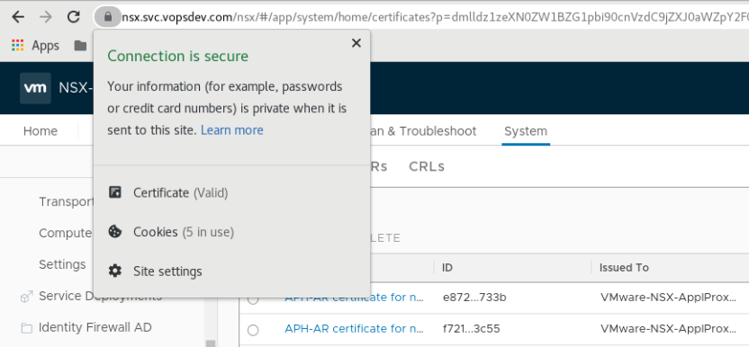

使用 PKI 签发的服务器证书替换 NSX-T Manager 的 cluster 与 node 自签名证书, 消除用户访问时的浏览器警告
通过 PKI 为 NSX Manager 签发证书
方便起见, 这里使用同一个通配符证书来替换 cluster 证书以及所有三个 node 的证书.
证书的 openssl 配置文件: etc/nsx.conf:
1
2
3
4
5
6
7
8
9
10
11
12
13
14
15
16
17
18
19
20
21
22
23
24
25
26
27
28
29
30
31
32
33
| [ req ]
default_bits = 2048 # RSA key size
encrypt_key = no # Protect private key
default_md = sha256 # MD to use
utf8 = yes # Input is UTF-8
string_mask = utf8only # Emit UTF-8 strings
prompt = no # Prompt for DN
distinguished_name = server_dn # DN template
req_extensions = server_reqext # Desired extensions
[ server_dn ]
0.domainComponent = com
1.domainComponent = vopsdev
organizationName = "VOPSDEV"
commonName = nsx
[ server_reqext ]
keyUsage = critical,digitalSignature,keyEncipherment,dataEncipherment,nonRepudiation
extendedKeyUsage = serverAuth,clientAuth
subjectKeyIdentifier = hash
subjectAltName = @san
[ san ]
DNS.1 = vopsdev.com
DNS.2 = *.vopsdev.com
DNS.3 = *.int.vopsdev.com
DNS.4 = *.svc.vopsdev.com
DNS.5 = localhost
IP.1 = 192.168.11.30
IP.2 = 192.168.11.31
IP.3 = 192.168.11.32
IP.4 = 192.168.11.33
IP.5 = 127.0.0.1
|
根据需要调整配置文件的内容.
我的 PKI 包含一个 openssl root CA 和一个 hashicorp vault issuing CA. 使用 openssl 创建私钥和证书请求文件 csr, 然后向 vault issuing CA 请求签发服务器证书
1
2
3
4
| openssl genpkey -out key/nsx.key -outform PEM -algorithm RSA -pkeyopt rsa_keygen_bits:2048 -pkeyopt rsa_keygen_pubexp:65537
openssl req -new -config etc/nsx.conf -out csr/nsx.csr -key key/nsx.key
vault write vopsdev-intermediate-ca-g1/sign-verbatim/general-server csr=@csr/nsx.csr ttl="87600h"
|
将完整证书链保存为 nsx.full-chain.crt
替换 NSX Manager 证书
导入 PKI 的 root CA 证书: System, Settings, Certificates, Import CA Certificate
导入 PKI 签发的 nsx 服务器证书与私钥: System, Settings, Certificates, Import Certificate
导入完成后记录这个证书的 ID
调用 API 设置 cluster 证书和 node 证书
1
2
3
4
5
6
7
8
9
10
11
12
| ID=f7ba2345-f521-4572-860b-9ab4fc5a8c07
curl -k -X POST -u 'admin:CHANGEME' "https://nsx.svc.vopsdev.com/api/v1/cluster/api-certificate?action=set_cluster_certificate&certificate_id=$ID"
curl -k -X POST -u 'admin:CHANGEME' "https://nsx-0.int.vopsdev.com/api/v1/node/services/http?action=apply_certificate&certificate_id=$ID"
curl -k -X POST -u 'admin:CHANGEME' "https://nsx-1.int.vopsdev.com/api/v1/node/services/http?action=apply_certificate&certificate_id=$ID"
curl -k -X POST -u 'admin:CHANGEME' "https://nsx-2.int.vopsdev.com/api/v1/node/services/http?action=apply_certificate&certificate_id=$ID"
|
这里 NSX-T 会验证 crl, 如果你的 CDP 无法正常访问 (例如很多 ADCS CA 仅仅配置了将 crl 发布到 ldap), 你需要禁用 crl 检查
最后刷新浏览器测试
